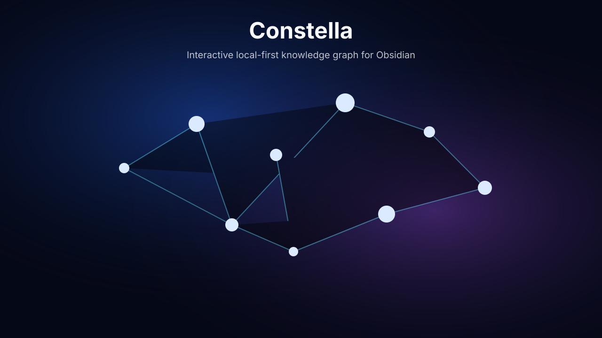

Interactive graph
Turn notes into nodes, links into edges, and explore your vault with hover, search, pin, hide, expand, and path preview controls.
Explore Obsidian as an interactive, local-first knowledge graph with cinematic visuals, auto-travel journeys, templates, playlists, fullscreen display, and PNG export.

Turn notes into nodes, links into edges, and explore your vault with hover, search, pin, hide, expand, and path preview controls.
Switch between visual styles, color schemes, camera motion, drawing-line animations, node icons, cluster halos, and depth layers.
Constella reads Obsidian metadata locally. It does not upload notes, use analytics, call external APIs, or edit note content.
Auto-travel through recent notes, forgotten notes, hubs, clusters, orphan notes, writing paths, daily reflection, and deep archive views.
Open fullscreen, launch a pop-out display window for another screen, and export the current graph as a PNG screenshot.
Use the mini-map, search results list, graph health panel, saved views, tag/folder color rules, legend, and FPS indicator.
Your Vault/
.obsidian/
plugins/
constella/
main.js
manifest.json
styles.css
Press Command + Shift + . in Finder to show hidden folders, then open .obsidian/plugins/constella inside your vault.
Enable Hidden items in File Explorer, then open .obsidian\plugins\constella inside your vault.
Press Ctrl + H in your file manager to show hidden folders, then open .obsidian/plugins/constella inside your vault.